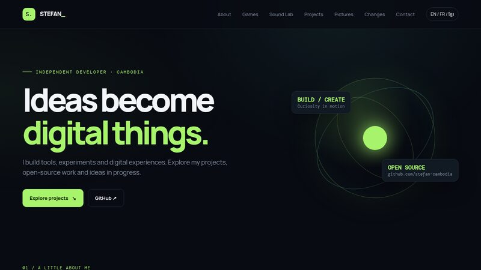
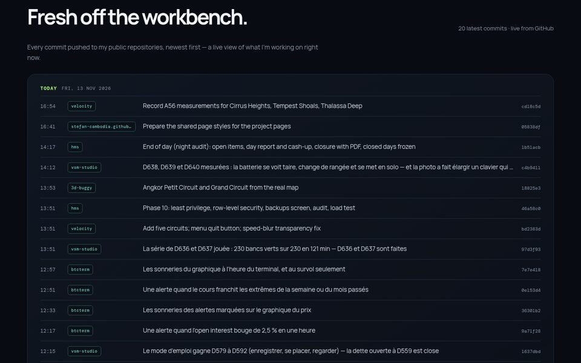
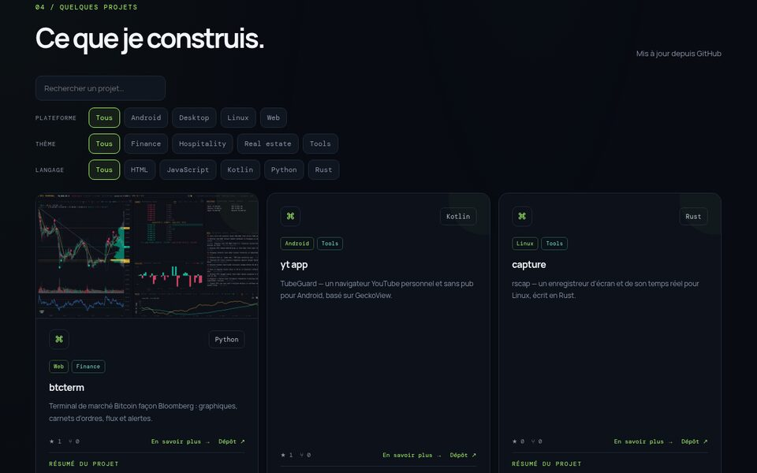

This websiteCe siteគេហទំព័រនេះ
Every version of this page since 13 Nov 2026, newest first: what changed, and the captures and videos as the page showed them at the time.
Chaque version de cette page depuis le 13 nov. 2026, de la plus récente à la plus ancienne : ce qui a changé, et les captures et vidéos telles que la page les montrait à l’époque.
គ្រប់កំណែនៃទំព័រនេះ តាំងពីថ្ងៃទី 13 វិច្ឆិកា 2026 ពីថ្មីបំផុតទៅចាស់៖ អ្វីដែលបានផ្លាស់ប្តូរ និងរូបថតអេក្រង់ និងវីដេអូ ដូចដែលទំព័របានបង្ហាញនៅពេលនោះ។
Nothing on this page has been regenerated: every capture and video is the file the site published at the time, recovered from its Git history. What the site never published is not here. Since 21 November 2026, every change to the project page adds a version here, and the captures, videos and Last changes it replaces are kept.Rien sur cette page n’a été régénéré : chaque capture et chaque vidéo est le fichier que le site publiait à l’époque, retrouvé dans son historique Git. Ce que le site n’a jamais publié n’y figure pas. Depuis le 21 novembre 2026, chaque changement de la page du projet ajoute ici une version, et les captures, vidéos et derniers changements qu’il remplace sont conservés.គ្មានអ្វីនៅលើទំព័រនេះត្រូវបានបង្កើតឡើងវិញទេ៖ រូបថតអេក្រង់ និងវីដេអូនីមួយៗ គឺជាឯកសារដែលគេហទំព័របានផ្សាយនៅពេលនោះ ដែលបានយកមកវិញពីប្រវត្តិ Git របស់វា។ អ្វីដែលគេហទំព័រមិនដែលផ្សាយ មិនមាននៅទីនេះទេ។ តាំងពីថ្ងៃទី 21 ខែវិច្ឆិកា ឆ្នាំ 2026 ការផ្លាស់ប្តូរនីមួយៗនៃទំព័រគម្រោង បន្ថែមកំណែមួយនៅទីនេះ ហើយរូបថតអេក្រង់ វីដេអូ និងការផ្លាស់ប្តូរចុងក្រោយ ដែលវាជំនួស ត្រូវបានរក្សាទុក។
From the latest to the first.De la plus récente à la première.ពីកំណែចុងក្រោយ ដល់កំណែដំបូង។
-
Twenty-five pagesVingt-cinq pagesទំព័រម្ភៃប្រាំ
With Chantrea Odoo, the page now counts twenty-five presentation pages.
Avec Chantrea Odoo, la page compte désormais vingt-cinq pages de présentation.
ជាមួយ Chantrea Odoo ឥឡូវនេះទំព័រនេះរាប់បានទំព័របង្ហាញចំនួនម្ភៃប្រាំ។
-
Private projects in the gridLes projets privés dans la grilleគម្រោងឯកជនក្នុងក្រឡា
The page explains how the Projects grid now shows the private repositories too, from a list in the page, with a padlock and a link to their presentation page; its Last changes gain that item.
La page explique comment la grille Projets montre désormais aussi les dépôts privés, depuis une liste dans la page, avec un cadenas et un lien vers leur page de présentation ; ses Derniers changements gagnent cet élément.
ទំព័រនេះពន្យល់ពីរបៀបដែលក្រឡាគម្រោង ឥឡូវបង្ហាញឃ្លាំងកូដឯកជនផងដែរ ពីបញ្ជីមួយក្នុងទំព័រ ជាមួយរូបសោ និងតំណទៅទំព័របង្ហាញរបស់វា ហើយការផ្លាស់ប្តូរចុងក្រោយរបស់វាបន្ថែមធាតុនេះ។
Taken off the page’s Last changes, kept hereSortis des derniers changements de la page, gardés iciដកចេញពីការផ្លាស់ប្តូរចុងក្រោយនៃទំព័រ រក្សាទុកនៅទីនេះ- Pages that follow their repositories
The 3D Buggy page follows the game to Angkor, with its circuits laid out from map data, a 12-capture gallery and the Grand Circuit’s 87-second film, and the game gets a featured band on the home page. Cambodia Rally gains its eight vehicles and its films, and on 19 November seven pages, from Angkor World Engine to Khmer Estate, caught up with the work pushed since they were written.
- Des pages qui suivent leurs dépôts
La page de 3D Buggy suit le jeu jusqu’à Angkor, avec ses circuits tracés d’après les données cartographiques, une galerie de 12 captures et le film de 87 secondes du Grand Circuit, et le jeu a droit à un bandeau en vedette sur l’accueil. Cambodia Rally gagne ses huit véhicules et ses films, et le 19 novembre, sept pages, d’Angkor World Engine à Khmer Estate, rattrapent le travail poussé depuis leur rédaction.
- ទំព័រដែលតាមទាន់ឃ្លាំងកូដរបស់វា
ទំព័រ 3D Buggy តាមហ្គេមទៅដល់អង្គរ ជាមួយសៀគ្វីដែលគូសតាមទិន្នន័យផែនទី វិចិត្រសាលរូបថត 12 និងភាពយន្ត 87 វិនាទីនៃ Grand Circuit ហើយហ្គេមនេះទទួលបានផ្នែកពិសេសមួយនៅលើទំព័រដើម។ Cambodia Rally បន្ថែមយានជំនិះទាំងប្រាំបី និងភាពយន្តរបស់វា ហើយនៅថ្ងៃទី 19 ខែវិច្ឆិកា ទំព័រប្រាំពីរ ចាប់ពី Angkor World Engine ដល់ Khmer Estate បានតាមទាន់ការងារដែលបាន push ចាប់តាំងពីពេលវាត្រូវបានសរសេរ។
-
Up to date with the history pagesÀ jour avec les pages d’historiqueធ្វើបច្ចុប្បន្នភាពជាមួយទំព័រប្រវត្តិ
The page catches up with the site: 24 presentation pages, the In development section with Angkor World Engine and Vigie, a highlight on the history pages, and Last changes running to 26 November.
La page rattrape le site : 24 pages de présentation, la section En développement avec Angkor World Engine et Vigie, un point fort sur les pages d’historique, et des Derniers changements qui vont jusqu’au 26 novembre.
ទំព័រនេះធ្វើបច្ចុប្បន្នភាពតាមគេហទំព័រ៖ ទំព័របង្ហាញ 24 ផ្នែកកំពុងអភិវឌ្ឍ ជាមួយ Angkor World Engine និង Vigie ចំណុចពិសេសអំពីទំព័រប្រវត្តិ និងការផ្លាស់ប្តូរចុងក្រោយរហូតដល់ថ្ងៃទី 26 ខែវិច្ឆិកា។
Taken off the page’s Last changes, kept hereSortis des derniers changements de la page, gardés iciដកចេញពីការផ្លាស់ប្តូរចុងក្រោយនៃទំព័រ រក្សាទុកនៅទីនេះ- Renamed Chantrea Systems
The site took a new name on every page: the brand, the footer and the page titles. First renamed The Moon Studio, it became Chantrea Systems later the same day.
- A page for each project
Nine projects get a presentation page, from Synth Rack and VSM Studio to HMS and this website, on the model of the game pages; each states plainly what is unfinished. Projects without screenshots show command-line examples instead, and Velocity joins the Games.
- Game pages, in Khmer too
Each game gets its own presentation page, opened from its card, and the next day the game pages are translated into Khmer. The home page gains the Last changes section, with the 20 latest commits grouped by day, and its sections now run About, Games, Sound Lab, Projects, Pictures, Last changes, Contact.
- Le site devient Chantrea Systems
Le site prend un nouveau nom sur toutes les pages : la marque, le pied de page et les titres. Renommé d’abord The Moon Studio, il devient Chantrea Systems plus tard le même jour.
- Une page pour chaque projet
Neuf projets reçoivent une page de présentation, de Synth Rack et VSM Studio à HMS et ce site, sur le modèle des pages de jeux ; chacune dit clairement ce qui n’est pas terminé. Les projets sans captures montrent à la place des exemples en ligne de commande, et Velocity rejoint les jeux.
- Les pages de jeux, en khmer aussi
Chaque jeu reçoit sa page de présentation, ouverte depuis sa carte, et le lendemain les pages de jeux sont traduites en khmer. L’accueil gagne la section Derniers changements, avec les 20 derniers commits groupés par jour, et ses sections se suivent désormais ainsi : À propos, Jeux, Sound Lab, Projets, Photos, Derniers changements, Contact.
- ប្តូរឈ្មោះជា Chantrea Systems
គេហទំព័រទទួលបានឈ្មោះថ្មីនៅលើគ្រប់ទំព័រ៖ ម៉ាក ផ្នែកបាតទំព័រ និងចំណងជើងទំព័រ។ ដំបូងវាត្រូវបានប្តូរឈ្មោះជា The Moon Studio ហើយនៅថ្ងៃដដែលនោះ វាបានក្លាយជា Chantrea Systems។
- ទំព័រមួយសម្រាប់គម្រោងនីមួយៗ
គម្រោងប្រាំបួនទទួលបានទំព័របង្ហាញ ចាប់ពី Synth Rack និង VSM Studio រហូតដល់ HMS និងគេហទំព័រនេះ តាមគំរូនៃទំព័រហ្គេម ហើយទំព័រនីមួយៗប្រាប់យ៉ាងច្បាស់ពីអ្វីដែលមិនទាន់បញ្ចប់។ គម្រោងដែលគ្មានរូបថតអេក្រង់ បង្ហាញឧទាហរណ៍ command-line ជំនួសវិញ ហើយ Velocity ចូលរួមក្នុងផ្នែកហ្គេម។
- ទំព័រហ្គេម ជាភាសាខ្មែរផងដែរ
ហ្គេមនីមួយៗទទួលបានទំព័របង្ហាញផ្ទាល់ខ្លួន ដែលបើកពីកាតរបស់វា ហើយនៅថ្ងៃបន្ទាប់ ទំព័រហ្គេមត្រូវបានបកប្រែជាភាសាខ្មែរ។ ទំព័រដើមបន្ថែមផ្នែក «ការផ្លាស់ប្ដូរចុងក្រោយ» ដែលបង្ហាញ commits ចុងក្រោយបំផុតចំនួន 20 ដាក់ជាក្រុមតាមថ្ងៃ ហើយផ្នែកនានាឥឡូវរៀបតាមលំដាប់៖ អំពីខ្ញុំ ហ្គេម មន្ទីរពិសោធន៍សំឡេង គម្រោង រូបថត ការផ្លាស់ប្ដូរចុងក្រោយ ទំនាក់ទំនង។
-
Last changesDerniers changementsការផ្លាស់ប្តូរចុងក្រោយ
The page now ends with a summary of the repository’s latest commits, in English, French and Khmer.
La page se termine désormais par un résumé des derniers commits du dépôt, en anglais, en français et en khmer.
ឥឡូវនេះ ទំព័របញ្ចប់ដោយសេចក្តីសង្ខេបនៃ commit ចុងក្រោយរបស់ repository ជាភាសាអង់គ្លេស បារាំង និងខ្មែរ។
-
Nine games, 23 pagesNeuf jeux, 23 pagesហ្គេមប្រាំបួន ទំព័រ 23
The page now counts nine games and 23 presentation pages.
La page compte désormais neuf jeux et 23 pages de présentation.
ឥឡូវនេះ ទំព័ររាប់បានហ្គេមប្រាំបួន និងទំព័របង្ហាញ 23។
-
Its own pageSa propre pageទំព័រផ្ទាល់ខ្លួន
This website gets a page of its own, in English, French and Khmer, with screenshots captured locally from the site.
Ce site reçoit sa propre page, en anglais, en français et en khmer, avec des captures prises en local sur le site.
គេហទំព័រនេះទទួលបានទំព័រផ្ទាល់ខ្លួន ជាភាសាអង់គ្លេស បារាំង និងខ្មែរ ជាមួយរូបថតអេក្រង់ដែលថតនៅលើកុំព្យូទ័រ ពីគេហទំព័រ។
6 captures6 capturesរូបថតអេក្រង់ 6
On the pageSur la pageនៅលើទំព័រ 
On the pageSur la pageនៅលើទំព័រ 
On the pageSur la pageនៅលើទំព័រ 
On the pageSur la pageនៅលើទំព័រ 
On the pageSur la pageនៅលើទំព័រ 
On the pageSur la pageនៅលើទំព័រ